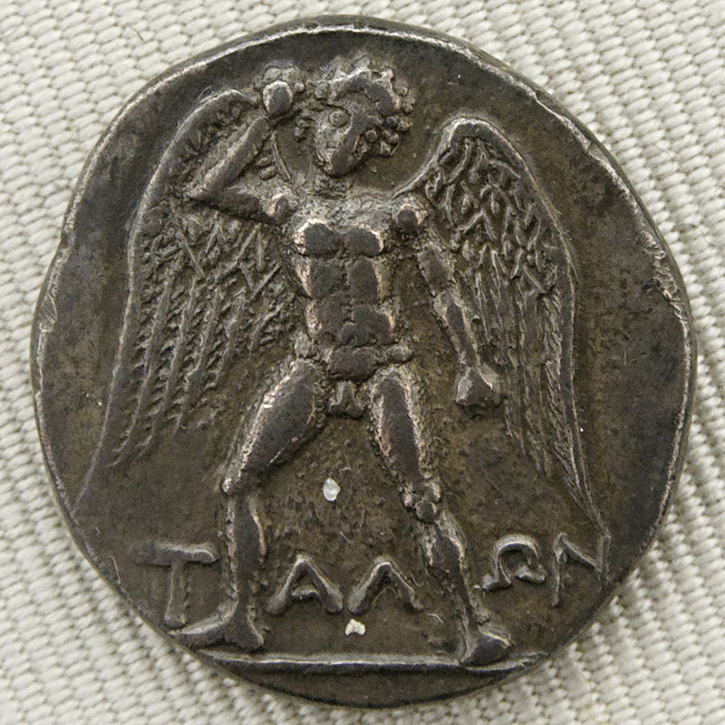

Thought-capable artificial beings appeared as storytelling devices in antiquity, and have been common in fiction, as in Mary Shelley's Frankenstein or Karel Čapek's R.U.R. These characters and their fates raised many of the same issues now discussed in the ethics of artificial intelligence. The study of mechanical or "formal" reasoning began with philosophers and mathematicians in antiquity. The study of mathematical logic led directly to Alan Turing's theory of computation, which suggested that a machine, by shuffling symbols as simple as "0" and "1", could simulate any conceivable act of mathematical deduction. This insight, that digital computers can simulate any process of formal reasoning, is known as the Church–Turing thesis.[39] Along with concurrent discoveries in neurobiology, information theory and cybernetics, this led researchers to consider the possibility of building an electronic brain. Turing proposed changing the question from whether a machine was intelligent, to "whether or not it is possible for machinery to show intelligent behaviour". The first work that is now generally recognized as AI was McCullouch and Pitts' 1943 formal design for Turing-complete "artificial neurons.
